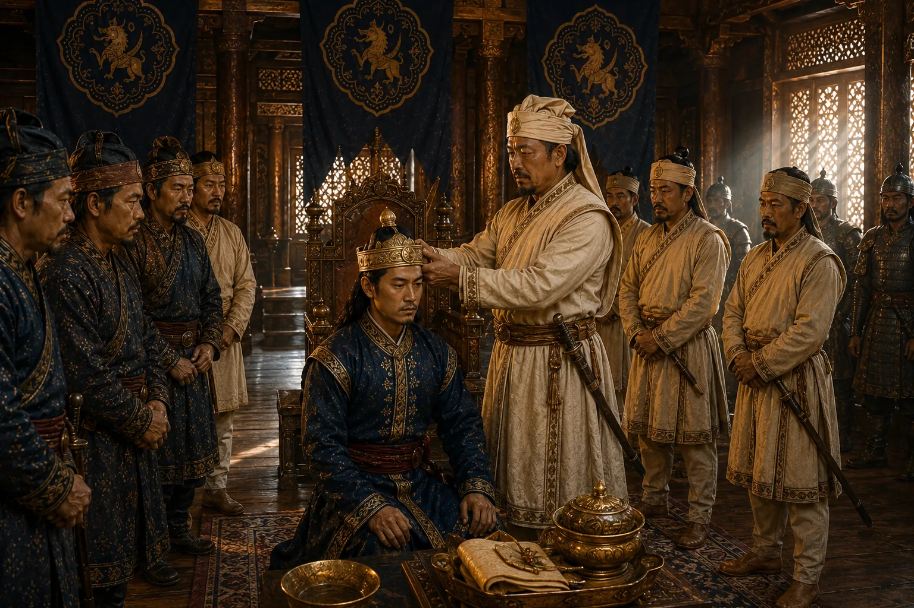

Installation of Sujinphaa by Atan Burhagohain
1675 · Six kings in nine years

Noble statesman Atan Burhagohain refuses the crown himself and adheres strictly to constitution by placing Dihingia prince Sujinphaa on the throne.
Sources have not yet been catalogued for this record.
People: Atan Burhagohain, Sujinphaa (Arjun Konwar)